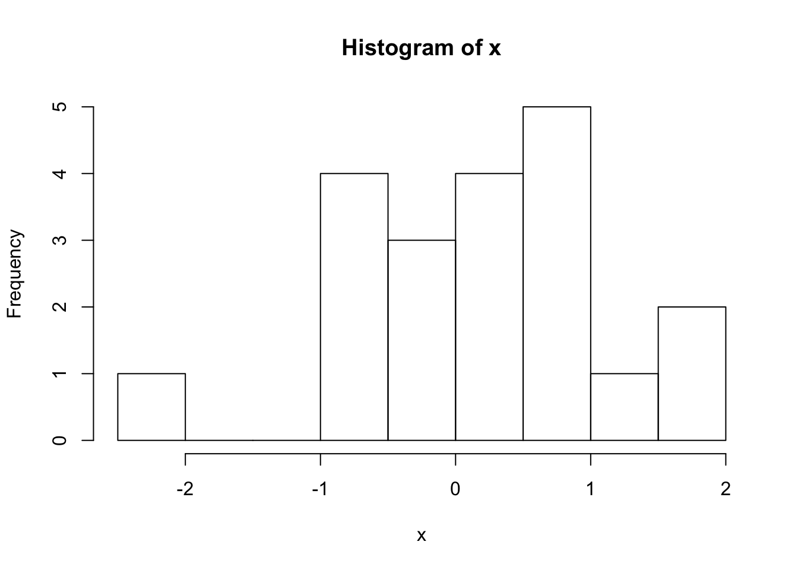

3 Computing Probabilities
There are many common families of probability distributions and we have discussed six so far. The discrete distributions include the discrete Uniform, Bernoulli, and Binomial. The continuous distributions include the continuous Uniform, Normal, and t.
This chapter provides a set of examples to show you how to compute probabilities from a few of these distributions in R.
3.1 Normal Distribution
R has four normal distribution functions: dnorm( ), pnorm( ), qnorm( ), and rnorm( ).
dnorm(x,mean,sd)probability density function (PDF)
- input:xis the value at which you want to evaluate the normal PDF
- output: a positive number since the PDF \(f(x)\) must be positive
- example: evaluate \(f(x)\)
pnorm(q,mean,sd)cumulative distribution function (CDF)
- input:qis the value for which you want to find the area below/above
- output: a probability
- example: compute \(P(X<q)\)
qnorm(p,mean,sd)quantile function
- input:pis a probability
- output: a real number since \(X\in(-\infty,\infty)\)
- example: find the value \(q\) such that \(P(X<q)=p\)
rnorm(n,mean,sd)random number generator
- input:nis the number of observations you want to generate
- output: a vector of n real numbers
- example: generate n independent \(N(\mu,\sigma^2)\) random variables
More information is also accessible in R if you type ?dnorm, ?pnorm, ?qnorm, or ?rnorm.
To learn how to use these functions, we’ll start with a few exercises on the standard normal distribution which is a normal distribution with mean 0 and standard deviation of 1. We will then move on to the more general \(N(\mu,\sigma^2)\) distribution.
3.1.1 Probability Density Function (dnorm)
When \(X\) is a continuous random variable, we know that \(P(X=x)=0\). Therefore, dnorm( ) does not return a probability, but rather the height of the PDF. Even though the height of the PDF is not a probability, we can still interpret density evaluations as the relatively likelihood of observing a certain value \(x\).
PROBLEM 1: Let \(X\sim N(0,1)\). Is the value \(x=1\) or \(x=-0.5\) more likely to occur under this normal distribution?
## [1] 0.242## [1] 0.3521The results show that \(x=-0.5\) is more likely, since \(f(-0.5)>f(1)\). This should be expected because we know that density function is symmetric and peaks at the mean value which is 0 here. Since \(x=-0.5\) is closer to 0 than \(x=1\), it should have higher likelihood under \(N(0,1)\) distribution.
3.1.2 Cumulative Distribution Function (pnorm)
The pnorm( ) function is useful for evaluating probabilities of the form \(P(X\leq x)\) or \(P(X \geq x)\).
PROBLEM 2: If \(X\sim N(0,1)\), what is \(P(X<0)\)?
## [1] 0.5
PROBLEM 3: If \(X\sim N(0,1)\), what is \(P(X<1)\)?
## [1] 0.8413
PROBLEM 4: If \(X\sim N(0,1)\), what is \(P(X>1)\)?
We have two ways of answering this question. First, we can recognize that \(P(X>1)=1-P(X\geq 1)\).
## [1] 0.1587A second approach is to use the lower.tail= option within the pnorm( ) function. When lower.tail=TRUE then the pnorm( ) function returns the probability to the left of a given number \(x\) and if lower.tail=FALSE then pnorm( ) returns the probability to the right of \(x\).
## [1] 0.1587
PROBLEM 5: If \(X\sim N(0,1)\), what is \(P(0<X<1)\)
## [1] 0.3413Once we understand how to use the pnorm( ) function to compute standard normal probabilities, extending the function to compute probabilities of any normal distribution is straightforward. All we have to do is change the mean= and sd= arguments.
Remember that the normal functions in R call for the standard deviation \(\sigma\), NOT the variance \(\sigma^2\)!
PROBLEM 6: If \(X\sim N(4,9)\), what is \(P(X<0)\)?
## [1] 0.09121
PROBLEM 7: If \(X\sim N(2,3)\), what is \(P(X>5)\)?
## [1] 0.041633.1.3 Quantile Function (qnorm)
Next, let’s use the qnorm( ) function to find quantiles of the normal distribution.
PROBLEM 8: If \(X\sim N(0,1)\), find the value \(q\) such that \(P(X<q)=0.05\).
## [1] -1.645
PROBLEM 9: If \(X\sim N(0,1)\), find the value \(q\) such that \(P(X>q)=0.025\). That is, \(q\) is the value such that 2.5% of the area under the standard normal PDF is to its right.
## [1] 1.96
PROBLEM 10: If \(X\sim N(-4,2)\), find the value \(q\) such that \(P(X>q)=0.1\). That is, \(q\) is the value such that 10% of the area under the \(N(-4,2)\) PDF is to its right.
## [1] -2.1883.1.4 Random Number Generator (rnorm)
Finally, let’s use rnorm( ) to generate random samples of size \(n\) from a normal distribution.
PROBLEM 11: Generate \(n=20\) random variables from a standard normal distribution.
## [1] -0.62645 0.18364 -0.83563 1.59528 0.32951 -0.82047 0.48743
## [8] 0.73832 0.57578 -0.30539 1.51178 0.38984 -0.62124 -2.21470
## [15] 1.12493 -0.04493 -0.01619 0.94384 0.82122 0.59390
PROBLEM 12: Generate \(n=100\) random variables from a \(N(10,2)\) distribution.
## [1] 11.300 11.106 10.105 7.187 10.877 9.921 9.780 7.920 9.324 10.591
## [11] 11.921 9.855 10.548 9.924 8.053 9.413 9.442 9.916 11.556 11.079
## [21] 9.767 9.642 10.986 10.787 9.026 8.999 10.516 11.087 9.841 11.246
## [31] 10.563 9.134 10.482 8.403 12.027 12.801 9.481 8.523 10.806 9.809
## [41] 13.396 9.945 10.975 10.040 8.949 10.267 7.447 12.073 10.217 13.073
## [51] 10.672 8.996 10.864 8.679 8.227 10.412 9.373 10.002 10.105 9.166
## [61] 9.196 9.809 11.666 7.845 10.840 10.471 11.503 9.570 10.523 10.378
## [71] 9.233 11.708 11.641 10.990 12.244 10.790 8.195 9.189 8.268 9.331
## [81] 9.123 10.060 8.712 10.223 9.074 12.499 11.014 11.287 10.543 12.379
## [91] 9.101 9.347 12.026 9.080 9.707 9.444 9.547 9.605 10.699 9.749
3.2 Bernoulli and Binomial Distributions
The Bernoulli and Binomial distributions are intimately related: a Binomial random variable corresponds to the number of successes in \(n\) independent Bernoulli trials. For example, consider flipping a coin. Each coin flip can be modelled as a Bernoulli\((p)\) random variable with probability of success (heads) equal to \(p\). If you flipped a coin \(n=10\) times and wanted to model the number of sucesses (heads) in \(n=10\) trials, that would be a Binomial(\(n,p\)) random variable.
R has four functions that can be used to compute both Bernoulli and Binomial probabilities: dbinom( ), pbinom( ), qbinom( ), rbinom( ).
dbinom(x,size,prob)probability mass function (PMF)
- input:xis the number of successes,sizeis the number of trials \(n\),probis the probability of success \(p\)
- output: a probability since \(0\leq P(X=x)\leq1\)
- example: evaluate \(P(X=x)\)
pbinom(q,size,prob)probability distribution function (CDF)
- input:qis the value for which you want to find the area below/above,sizeis the number of trials \(n\),probis the probability of success \(p\)
- output: a probability
- example: evaluate \(P(X\leq x)\)
qbinom(p,size,prob)quantile function
- input:pis a probability,sizeis the number of trials \(n\),probis the probability of success \(p\)
- output: a positive integer since \(X\in\{0,1,\dotsc,n\}\)
- example: find \(q\) s.t. \(P(X\leq q)=p\)
rbinom(n,size,prob)random number generator
- input:nis the number of observations you want to generate,sizeis the number of trials \(n\),probis the probability of success \(p\)
- output: a vector of n positive integers
- example: generate \(n\) independent Binomial\((n,p)\) random variables
Note: To use these functions to compute Bernoulli probabilities, set size=1.
More information is also accessible in R if you type ?dbinom, ?pbinom, ?qbinom, or ?rbinom.
3.2.1 Probability Mass Function (dbinom)
PROBLEM 1: If you flip a coin \(n=5\) times and in each flip the probability of heads is \(p=0.5\), what is the chance that you get 2 successes?
Here, our random variable \(X\) is the number of successes in \(n\) independent trials, so \(X\sim\text{Binomial}(n,p)\) with \(n=5\) and \(p=0.5\).
## [1] 0.3125We can also check our answer using the Binomial probability mass function: \(P(X=x)={n\choose x}p^x(1-p)^{n-x}\).
## [1] 0.31253.2.2 Cumulative Distribution Function (pbinom)
PROBLEM 2: If you flip a coin \(n=5\) times and in each flip the probability of heads is \(p=0.5\), what is the chance that you get at most 2 successes?
Now we want to find \(P(X\leq2)\). We know that \(P(X\leq2)=P(X=2)+P(X=1)+P(X=0)\), so we could again use the dbinom( ) function.
## [1] 0.5The problem is that this approach becomes cumbersome as the number of trials increases. A more efficient approach is to recognize that \(P(X\leq2)\) takes the form of the CDF and use pnorm( ).
## [1] 0.5
PROBLEM 3: If you flip a coin \(n=100\) times and in each flip the probability of heads is \(p=0.25\), what is the chance that you get at most 20 successes?
## [1] 0.1488
PROBLEM 4: If you flip a coin \(n=100\) times and in each flip the probability of heads is \(p=0.25\), what is the chance that you get at least 20 successes?
We have two ways to solve this problem. First, we can write \(P(X\geq 20)=1-P(X<20)=1-P(X\leq 19)\) where \(P(X<20)=P(X\leq 19)\) since \(X\) is discrete.
## [1] 0.9005Alternatively, we can use the “lower.tail=” option to tell R we want the probability greater than x. However, note that this is strictly greater than, so we must again remember than \(P(X\geq 20)=P(X>19)\).
## [1] 0.90053.2.3 Quantile Function (qbinom)
PROBLEM 5: Suppose you flip a coin \(n=20\) times where each flip has a probability of heads equal to \(p=0.5\). Find the value \(q\) such that the probability of getting at most \(q\) successes is equal to 0.25.
## [1] 83.2.4 Random Number Generator (rbinom)
PROBLEM 5: Generate \(n=50\) Bernoulli\((p)\) random variables with \(p=0.2\).
## [1] 0 0 1 0 0 0 0 0 0 1 0 1 0 0 0 0 0 0 0 1 0 0 0 0 0 0 0 0 0 0 0 0 0 0 0
## [36] 0 0 0 0 0 0 0 1 0 0 0 0 0 0 0
PROBLEM 6: Generate \(n=100\) Binomial\((n,p)\) random variables with \(p=0.4\).
## [1] 17 16 29 18 20 22 15 15 14 26 22 15 20 20 19 30 16 24 14 19 16 17 24
## [24] 22 17 20 15 18 28 21 22 18 19 31 24 27 24 23 17 23 29 18 19 24 14 19
## [47] 19 16 21 28 30 16 20 19 22 17 20 16 19 22 20 14 23 19 29 18 24 15 25
## [70] 20 15 18 24 18 21 24 14 22 22 20 19 21 26 17 17 19 18 24 16 20 19 21
## [93] 22 28 17 17 23 24 15 27